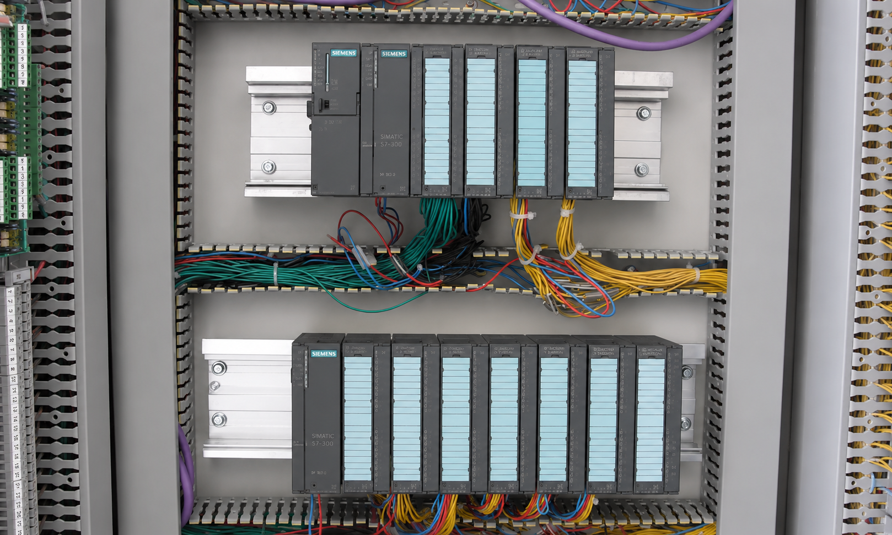
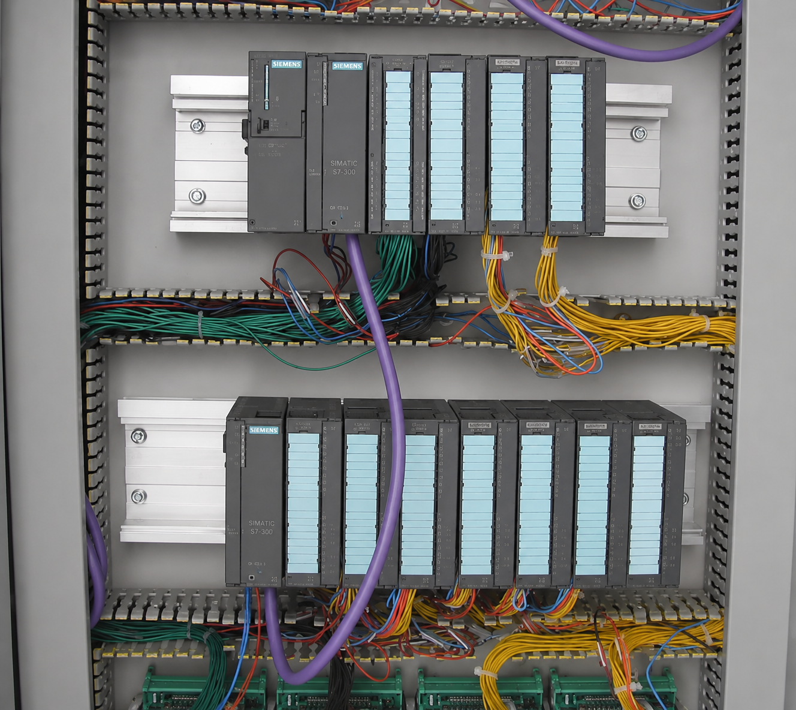

Limitação de módulos por rack
O rack principal, formado pelo trilho DIN estruturado do CLP Siemens S7-300, comporta no máximo 11 módulos instalados lado a lado. Essa quantidade inclui módulos de entradas e saídas digitais, módulos analógicos, módulos de comunicação e módulos de funções especiais, excluindo-se a fonte de alimentação e a própria CPU, que ocupam posições fixas.
Em projetos de pequeno e médio porte, esse limite raramente representa um problema. Contudo, em aplicações industriais mais complexas, como painéis de controle de sistemas de separação, compressão, utilidades ou geração em plantas offshore, o número de módulos de I/O pode ultrapassar facilmente esse limite. Nesses casos, a solução prevista pelo próprio sistema S7-300 é o uso de racks de expansão.

O papel do bus connector no rack principal
Antes de compreender a expansão, é importante consolidar como a comunicação ocorre dentro do rack principal. Todos os módulos instalados nele são interligados por um bus connector, também chamado de conector de backplane, que forma um barramento interno de dados. Esse barramento é o meio pelo qual a CPU envia comandos e recebe informações de cada módulo. Sem essa conexão física, o módulo existe no rack, mas é invisível para a CPU.
O bus connector é um elemento simples, geralmente já encaixado na lateral traseira de cada módulo, e não requer configuração: ele é transparente ao usuário. O ponto-chave é que esse mecanismo funciona apenas dentro de um mesmo rack. Módulos instalados em um rack diferente não são alcançados por esse barramento.
O problema da expansão
Quando o projeto demanda mais de 11 módulos, é necessário adicionar um rack secundário, chamado de rack de expansão, ou Expansion Rack. Porém, como a CPU está fisicamente em outro rack, ela não consegue se comunicar com esses módulos por meio do bus connector convencional. É necessário um mecanismo de comunicação entre racks.
A solução fornecida pela Siemens para o S7-300 é o módulo de interface, denominado IM, ou Interface Module.
Funcionamento do módulo de interface
O par de módulos IM funciona como a ponte que permite à CPU trocar dados com módulos instalados em racks de expansão. Um IM emissor é instalado no rack principal, imediatamente após a CPU ou após os demais módulos do rack, conforme a arquitetura adotada. Um IM receptor é instalado no rack de expansão, na posição mais à esquerda desse rack.
Os dois módulos são interligados por um cabo dedicado, conhecido como cabo de expansão IM/IM, que pode ter diferentes comprimentos conforme a necessidade de distância entre os racks.
O fluxo de dados dos módulos instalados no rack de expansão percorre o seguinte caminho: módulos do ER, IM receptor no rack de expansão, cabo de interligação, IM emissor no rack principal e CPU. Da mesma forma, comandos enviados pela CPU percorrem o caminho inverso.
Para a CPU, os módulos do rack de expansão são tratados como se fizessem parte de um sistema unificado. Ela não distingue fisicamente de qual rack cada módulo faz parte; essa abstração é gerenciada pelo par de IMs e configurada no STEP 7.

Múltiplos racks de expansão
Caso o projeto exija uma quantidade ainda maior de módulos, é possível encadear mais racks de expansão. Cada rack adicional requer seu próprio conjunto de módulos IM e cabo de interligação. O S7-300 suporta no máximo 3 racks de expansão além do rack principal, totalizando 4 racks no sistema.
Isso eleva a capacidade máxima para até 44 módulos de I/O, considerando 11 módulos por rack em 4 racks, o que é suficiente para a grande maioria das aplicações industriais de médio porte.
A numeração dos racks, normalmente 0, 1, 2 e 3, é reconhecida pelo STEP 7 e deve ser configurada por chaves DIP no próprio rack de expansão, para que o sistema identifique corretamente cada posição.
Identificação dos módulos IM no catálogo Siemens
Os módulos de interface mais comuns para o S7-300 são o IM 360, o IM 361 e o IM 365. O conjunto IM 360 / IM 361 é o par clássico para conexão entre rack principal e racks de expansão, com cabo de até 10 metros entre racks. Já o IM 365 permite conectar apenas um rack de expansão, com cabo fixo de 1 metro, sendo uma solução mais compacta e econômica para projetos menores.
A escolha do par correto depende do número de racks a expandir e da distância física entre eles no painel.
Exemplo prático aplicado
Considere um painel de controle de uma plataforma de produção offshore que precisa acomodar 28 módulos de I/O do S7-300, distribuídos entre sinais de processos de separação e compressão. O problema é direto: um único rack suporta apenas 11 módulos. A pergunta prática é como estruturar o sistema.
A solução passa pela distribuição dos módulos em mais de um rack, usando módulos IM para manter a comunicação entre a CPU e os racks de expansão.
- No Rack 0, o rack principal, instalam-se a CPU, por exemplo uma CPU 315-2 DP, a fonte de alimentação PS e o IM emissor IM 360. As posições restantes recebem os primeiros módulos de I/O, até o limite permitido.
- No Rack 1, expansão 1, instala-se o IM receptor IM 361 na posição 0 desse rack, seguido de até 11 módulos de I/O. Um cabo é conectado entre o IM 360 e o IM 361.
- No Rack 2, expansão 2, outro IM 361 é instalado. Um segundo cabo interliga o IM do Rack 1 ao IM do Rack 2, e os 7 módulos restantes são instalados nesse rack.
- Na configuração de hardware do STEP 7, a chave DIP do Rack 1 é ajustada para endereço 1, e a do Rack 2 para endereço 2. Os três racks são declarados com seus módulos nas posições corretas.
Como resultado, a CPU enxerga os 28 módulos como parte de um único sistema coeso, independentemente do rack físico em que estão instalados.
Questões de múltipla escolha
-
Qual é o número máximo de módulos que podem ser instalados em um rack do S7-300?
A) 8
B) 11
C) 16
D) 32 -
Qual é a função principal do módulo de interface IM no S7-300?
A) Converter sinais analógicos em digitais dentro do rack principal
B) Proteger a CPU contra surtos de tensão nos módulos de I/O
C) Permitir a comunicação entre a CPU e os módulos instalados em racks de expansão
D) Substituir o bus connector em racks com mais de 6 módulos -
Quantos módulos IM são necessários para conectar um rack de expansão ao rack principal?
A) 1
B) 2
C) 3
D) 4 -
Em um sistema S7-300 com rack principal e dois racks de expansão, qual é o número máximo de módulos de I/O que o sistema pode acomodar?
A) 22
B) 28
C) 33
D) 44 -
Qual é o número máximo de racks de expansão suportados pelo S7-300?
A) 1
B) 2
C) 3
D) 4 -
Como o bus connector realiza a comunicação entre os módulos dentro do rack principal?
A) Por comunicação sem fio entre os módulos e a CPU
B) Por meio de um barramento físico interno que interliga todos os módulos ao longo do rack
C) Por protocolo PROFIBUS conectado à porta MPI da CPU
D) Por leitura sequencial de cada módulo via endereçamento Ethernet -
Onde deve ser instalado o IM receptor em um sistema com rack de expansão?
A) No rack principal, ao lado da fonte de alimentação
B) No rack de expansão, na posição mais à esquerda
C) Entre o rack principal e o rack de expansão, em um trilho separado
D) Diretamente na CPU, em um slot dedicado -
Em um projeto que demanda 14 módulos de I/O, qual é a configuração mínima necessária para o S7-300?
A) Um único rack principal com módulos de maior densidade
B) Um rack principal com IM emissor e um rack de expansão com IM receptor
C) Dois racks de expansão interligados sem necessidade de rack principal
D) Uma CPU com slot de expansão direta sem uso de módulos IM -
Qual informação é configurada na chave DIP do rack de expansão?
A) O endereço IP para comunicação Ethernet
B) A taxa de transmissão do cabo de expansão
C) O número identificador do rack dentro do sistema
D) O tipo de módulo IM instalado no rack -
Por que um módulo instalado em um rack de expansão não pode se comunicar diretamente com a CPU pelo bus connector?
A) Porque o bus connector transmite apenas sinais analógicos
B) Porque o bus connector é um barramento físico interno limitado ao escopo de um único rack
C) Porque a CPU só aceita sinais de módulos certificados pela Siemens
D) Porque o bus connector opera em tensão diferente da utilizada nos racks de expansão
Gabarito
1) B | 2) C | 3) B | 4) C | 5) C | 6) B | 7) B | 8) B | 9) C | 10) B